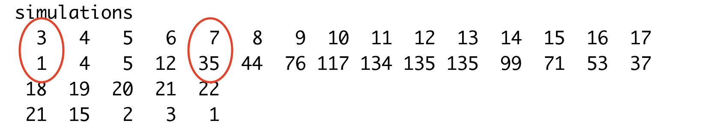
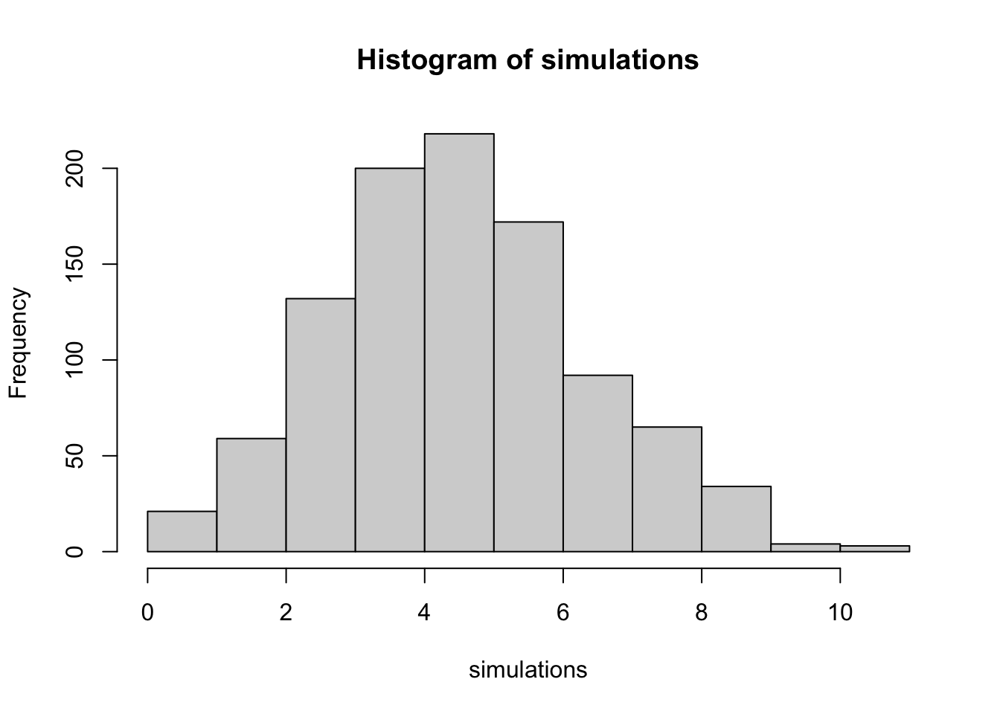

Chapter 14 Simulations
In the 2017-2018 season, James Palmer Jr. took 139 three point attempts and made 43 of them for a .309 shooting percentage. A few weeks into the next season, he was 7 for 39 – a paltry .179.
Is something wrong or is this just bad luck?
Luck is something that comes up a lot in sports. Is a team unlucky? Or a player? One way we can get to this, we can get to that is by simulating things based on their typical percentages. Simulations work by choosing random values within a range based on a distribution. The most common distribution is the normal or binomial distribution. The normal distribution is where the most cases appear around the mean, 66 percent of cases are within one standard deviation from the mean, and the further away from the mean you get, the more rare things become.

Let’s simulate 39 three point attempts 1000 times with his season long shooting percentage and see if this could just be random chance or something else.
We do this using a base R function called rbinom or binomial distribution. So what that means is there’s a normally distrubuted chance that James Palmer Jr. is going to shoot above and below his career three point shooting percentage. If we randomly assign values in that distribution 1000 times, how many times will it come up 7, like this example?
set.seed(1234)
simulations <- rbinom(n = 1000, size = 39, prob = .309)
table(simulations)## simulations
## 3 4 5 6 7 8 9 10 11 12 13 14 15 16 17 18 19 20 21 22
## 1 4 5 12 35 44 76 117 134 135 135 99 71 53 37 21 15 2 3 1How do we read this? The first row and the second row form a pair. The top row is the number of shots made. The number immediately under it is the number of simulations where that occurred.

So what we see is given his season long shooting percentage, it’s not out of the realm of randomness that with just 39 attempts for Palmer, he’s only hit only 7. In 1000 simulations, it comes up 35 times. Is he below where he should be? Yes. Will he likely improve and soon? Unless something is very wrong, yes. And indeed, by the end of the season, he finished with a .313 shooting percentage from 3 point range. So we can say he was just unlucky.
14.1 Cold streaks
During the Western Illinois game in the 2018-2019 season, the team, shooting .329 on the season from behind the arc, went 0-15 in the second half. How strange is that?
set.seed(1234)
simulations <- rbinom(n = 1000, size = 15, prob = .329)
hist(simulations)
table(simulations)## simulations
## 0 1 2 3 4 5 6 7 8 9 10 11
## 5 16 59 132 200 218 172 92 65 34 4 3Short answer: Really weird. If you simulate 15 threes 1000 times, sometimes you’ll see them miss all of them, but only a few times – five times, in this case. Most of the time, the team won’t go 0-15 even once. So going ice cold is not totally out of the realm of random chance, but it’s highly unlikely.